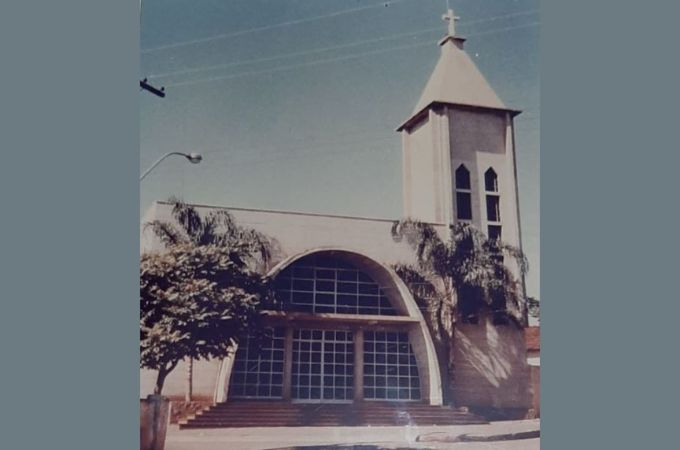
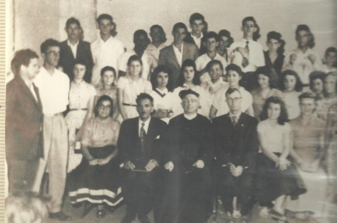
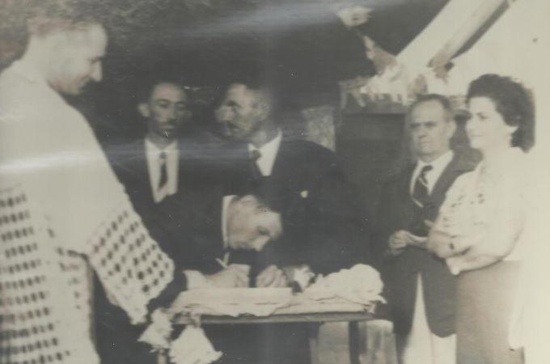
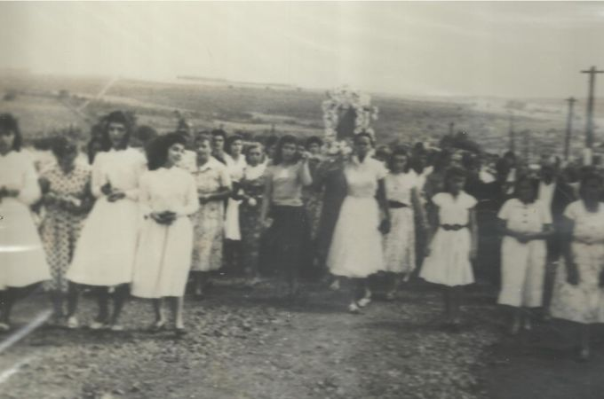
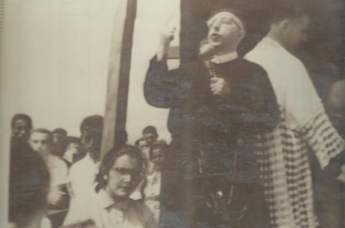
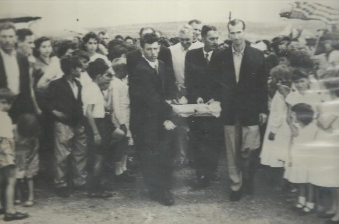
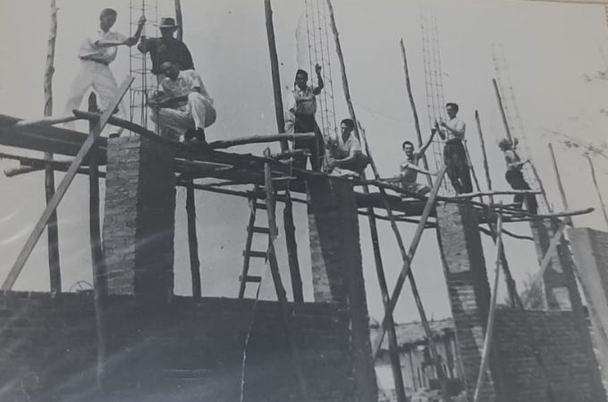
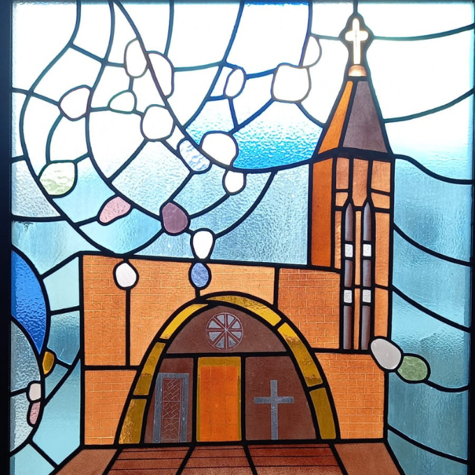

História da Paróquia
Nesta matéria vamos contar a história de nosso começo e de como a comunidade teve um papel fundamental na construção de nossa história.

A AVENIDA E AS REUNIÕES
Entrevistamos o Diácono Francisco Trofino que viu esta história começar e se lembra do contexto histórico desta época. A cidade estava crescendo, os bairros se ampliando, mas os meios de locomoção para a Igreja Matriz eram limitados. Logo, a comunidade de nosso bairro começou a se reunir e fazer quermesses na Avenida Frederico Ozanan, já próximo à rua Sampaio Bueno. O objetivo era angariar fundos para a construção de uma capela.
Quem também nos ajudará a contar essa história também é Ana Rosa de Paula (in memorian), nossa antiga sacristã, que deixou documento escrito também se recordando da época. “Assim foi que, no ano de 1956 três pessoas iluminadas pelo Divino Espírito Santo resolveram construir uma Igreja no Bairro de Vila Nova Jaú e Vila Sampaio[...]: o Sr. Onofre Ananias de Paula, o Sr. Angelo José Pascoalotte e o Sr. Laurindo Del Cazalli”, comenta Ana Paula.
Segundo a antiga sacristã, a ideia da construção partiu após um encontro dos três doadores em um empório localizado na avenida no dia 26 de novembro de 1956 e se depararam com um mendigo embriagado, conhecido como ‘Dito Cachaça’ e sofria com alguns garotos do bairro que lhe insultavam e até atiravam pedras nele.
“Diante dessa atitude, houve a interferência dos Srs. Onofre, Angelo e Laurindo, que impediram a ação desses garotos. Mediante ao ocorrido, os três amigos questionaram que alguma providência para impedir essas atitudes deveria ser tomada, ou a instalação de um posto policial, como sugeriu o Sr. Angelo, ou então, segundo o Sr. Onofre, que era uma pessoa bastante religiosa, a construção de uma igreja para a evangelização do bairro e, principalmente, desses garotos”, lembra Ana Paula em seu documento.
Então os três doadores foram a um bar e colocaram as suas ideias sobre uma igreja no bairro. O dono do bar em que houve a reunião, senhor Alcides Nunes, ofereceu um salão de sua propriedade, anexo ao bar, para a construção.

A AUTORIZAÇÃO
Segundo o documento de Ana Rosa, ainda no dia 26 de novembro de 1956, agora já na parte da tarde, a reunião era entre os senhores, Ângelo e Laurindo, mais João Francisco Calogeno, Alcides Nunes Clavero. Depois de conversa e de já conseguirem chegar a um entendimento todos foram a Casa Paroquial da Igreja Matriz de Nossa Senhora do Patrocínio para expor a ideia de expor ao Vigário, Monsenhor Francisco Serra, a ideia da construção da capela. O vigário prontamente concordou, mas indagou a todos qual seria o nome que pretendiam dar para a futura igreja construída.
“Vários nomes foram ventilados, até que permaneceu a opinião do Sr. Onofre Ananias de Paula em colocar Igreja Nossa Senhora Aparecida, nome este que era a mesma intenção do Padre Serra, que era a de fazer uma Igreja e consagrá-la a Nossa Senhora Aparecida. Na mesma semana, o Padre Serra entrou em contato com a Diocese de São Carlos, comunicando ao Bispo Dom Rui Serra a intenção daquelas pessoas e dele já recebeu a devida autorização”, explica o documento de Ana Paula.
Trofino comenta que esses loteadores fizeram a doação de três lotes de terra com frente para a rua 24 de maio e fundo para a rua Benjamin Constant (que hoje já não existe mais).

AS COMISSÕES, DOAÇÕES E AS QUERMESSES
Para melhor organização do início das obras houve a constituição de comissões. A primeira foi presidida pelo Sr. Onofre Ananias de Paula. Também foi criada uma subcomissão apenas de mulheres na qual a presidente foi Ana Rosa de Paula. Animadas, as comissões se dirigiam a uma imobiliária da cidade para adquirir um terreno onde ficaria instalada a igreja. Inicialmente o pagamento seria parcelado, pois ainda a comunidade não possuía dinheiro para compra-lo.
“Mas o Sr. Fuad Nassif Name vendo a boa vontade desse grupo de moradores no bairro, fez doação de uma área de 6 lotes da Quadra “S” do loteamento Vila Nova Jaú, lotes esses 7,8,9,10,11,12, com frente para a Rua Sampaio Bueno, esquina com a Rua 24 de Maio e fazendo fundos com a Rua Alberto Barboza. Com o terreno já adquirido, o entusiasmo foi ainda maior, sendo que com esses lotes foram lavradas as escrituras no dia 26 de abril de 1957, em nome da Mitra Diocesana de São Carlos, Estado de São Paulo, neste ato, representado por seu procurador Monsenhor Francisco Serra. Como se tratava de um loteamento em implantação ainda não dotado de água, nem energia elétrica, o Sr. Alcides Nunes Clavero cedeu um terreno de sua propriedade, localizado na esquina da Rua Sampaio Bueno com a Avenida Frederico Ozanan, para que ali se realizasse a primeira quermesse em prol da construção da Igreja Nossa Senhora Aparecida. Os primeiros recursos para a construção da Igreja foram conseguidos através das rifas e donativos. A primeira quermesse foi realizada no Sábado de Aleluia do ano de 1957”, relata Ana Paula em seus registros.

OS PRIMEIROS MOVIMENTOS: CRUZEIRO, PREGAÇÕES, TERÇO E CATEQUESE
Os relatos contam que as reuniões eram sempre realizadas em salão localizada na Avenida Frederico Ozanan, 946. Em um desses encontros houve a participação do ainda então Seminarista Francisco José Zugliani, acompanhado do seu pai Angelo Zugliani, o padre Chiquinho.
O movimento no bairro crescia e o objetivo era claro: a construção da igreja. A luta que era de recursos para a construção agora também passava a ser para a conscientização religiosa, logo foi se colocado um cruzeiro onde futuramente iria ser construída a igreja. “Assim, no dia 5 de maio de 1957, com a presença do Cônego Viturino, da Ordem Premonstratense, que fez um empolgante sermão, foi erguido o cruzeiro. Daí por diante, todo dia 5 de cada mês, com a presença de um padre que vinha do Colégio São Norberto era rezado o terço e feita uma pregação. No dia 6 de março, por autorização do Padre Serra, foi iniciado o catecismo no salão da Avenida Frederico Ozanan, 946. Esse catecismo era supervisionado pelo Sr. José Grossi e ministrado por cinco catequistas da Matriz Nossa Senhora do Patrocínio: Terezinha Alves Pereira, Vanda dos Santos, Valdete Ometto, Catarina Garrido e Elza Schiavon, tendo sido matriculadas 120 crianças de ambos os sexos, para frequentá-lo”, explica o documento de Ana Paula.

O COMEÇO: A COLOCAÇÃO DA PEDRA FUNDAMENTAL
A pedra fundamental foi colocada no dia 8 de dezembro do ano de 1957. “Era um domingo, por volta das 10 horas da manhã. Não estava muito quente, era um dia gostoso. Havia mais ou menos no dia uma média de 150 pessoas, o que para a época era considerado muita gente. Foi feita a colocação no altar da capela”, lembra com emoção o Diácono Francisco Trofino.
O mesmo horário e dia consta também nos documentos de Ana Paula que também registra a vinda do Padre Redentorista Daniel Marques que ficou por cinco dias no bairro, de 5 a 8 de dezembro, para que todos se confessassem. “No dia 8 às 7:00 horas da manhã foi celebrada a Santa Missa, com a comunhão no salão da Avenida Frederico Ozanan, 946 [...] e às 10:00 horas foi realizada uma missa campal no terreno onde seria construída a Igreja, a qual foi concelebrada pelo padre da Consolata Antonio Bazzacco e pelo Padre Redentorista Daniel Marques”, cita o documento.
A pedra fundamental foi colocada por Dom Francisco Zugliani, pároco da Igreja Matriz Nossa Senhora do Patrocínio no altar da capela. Tal fato ocorreu, pois ainda a igreja pertencia a Matriz.
Os registros também apontam que a primeira imagem de Nossa Senhora Aparecida foi doada pelo casal Manoel Nogueira Couto e a sua esposa Sra. Maria de Luz Souza Nogueira e a imagem às 15h saiu também do salão da Igreja São Benedito para chegar ao salão da futura igreja.
“Após a procissão foi realizada uma grande quermesse. O projeto da construção da Igreja foi elaborado pelo engenheiro civil Dr. Nilo André Bernardi, que fez tudo graciosamente, tendo inclusive, acompanhado a construção. Daí para frente, foram fundadas várias congregações, como a de filhas de Maria, dos Marianos e do Apostolado da Oração. A construção da Igreja foi desenvolvida normalmente”, relata o documento de Ana Paula.

MÃOS A OBRA: OS TRABALHOS PARA A CONSTRUÇÃO
Já com a pedra fundamental e a futura padroeira no local da igreja é hora de construir o templo.
Segundo o Diácono Francisco Trofino, a comunidade toda viu que o projeto enfim saiu do papel e queria ajudar. “Eram muitas pessoas que queriam dar a sua ajuda para a construção da igreja e pessoas com os mais diversos trabalhos: pedreiros, eletricistas, pintores, bancários... enfim. Muita gente fazia parte dos trabalhos e foi uma luta incessante. O povo não arredava o pé pois queria construir a igreja”, lembra.
Ainda segundo relato de Trofino a ajuda de doações era muito grande, seja por doações em dinheiro ou em materiais de construção. A criação se deu por Dom Ruy Serra e a instalação propriamente dita por Dom Constantino.
Ao término da construção, em 1967, foi entregue aos cuidados do Padre Victor Nardelli, sendo constituída posteriormente como Paróquia Nossa Senhora Aparecida em 12 de outubro de 1968 passando por diversos párocos, tendo como o primeiro deles o Cônego Gastão Oliboni, popularmente conhecido como Padre Gastão até hoje estar sob os cuidados do Padre Celso Luiz Buscariolo, o 8º pároco de nossa comunidade desde o seu nascimento.

O SENTIMENTO
“A Igreja é isso: o trabalho de uma comunidade que viu a necessidade da Palavra de Deus perto da sua casa e se empenhou para fazer o melhor para que isso acontecesse”, lembra emocionado o Diácono Francisco Trofino.
E hoje a nossa comunidade continua e você que nos lê e participa de nossas celebrações. Obrigado por fazer parte dessa história.

Douglas Mendes Soto e Letícia Maria